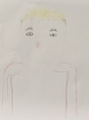
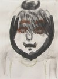
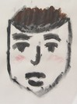

【てれび戦士育成計画】金子画伯の上達
皆さん、こんにちは！大天才テレビジョン 広報のもっちーです♪
今日のてれび戦士育成計画「似顔絵を描く」はご覧いただけましたか？
金子隼也画伯の描いた似顔絵が、あまりにも衝撃的だったので、ここで公開しちゃいますヾ(oﾟｘﾟo)ﾉｼ
◆１枚目◆出川特命Ｐ
◆２枚目◆鈴木ＡＰ

◆３枚目◆(ふたたび)出川特命Ｐ

並べてみると、コーナーの中でかなり上達したことが分かります！ね！！
  
ちなみに似顔絵の達人・ユキンコアキラさんによると、似顔絵を描くポイントは以下の５つ！
①最初に大まかな顔の大きさを決める
②描き込む順番：髪→顔型→口・鼻→目→まゆ毛 の順番で描き込む
③顔のパーツ：バランスが重要！
④パーツ（口・鼻・目・まゆ毛）の描き方：影を意識して描き込む
⑤目の描き方：上まぶたは濃く、下まぶたは薄く描き込む。瞳は線で描き込む
金子画伯の画力を劇的アップさせた達人のコツ、皆さんも是非試してみてくださいね～！
投稿者:もっちー＠大天才テレビジョン広報室 | 投稿時間:18時54分 | カテゴリ：お知らせ！ | 固定リンク


 " title="ソーシャルブックマークについて">
" title="ソーシャルブックマークについて">
※NHKサイトを離れます。